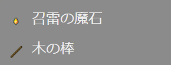
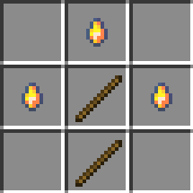
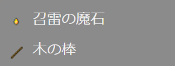
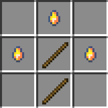

【いかずちの杖】
はじめに
威力が集中できる▶いなずまの矢を使った▶機雷の弓に比べると攻撃力は劣りますが、今回は対空武器として使えるものを作ってみました。
▶いなずまの弓や▶いなずまの剣の場合はピンポイントで稲妻を地面に落とすものでしたが、「いかずちの杖」の場合は空中であっても狙った方向へ落雷させる事ができます。
▼一人称

▼横から見た場合

▶召雷の魔石で実装していた▶エンティティプロパティも採用しているので、▶ネットショップに接続中は発動しないのはもちろんですが、最初の落雷地点までのブランクが生まれるので雷撃による範囲ダメージを受けないようにする効果もあります。
▼上空に向かって放った場合

空中を旋回しているガストやファントムに対しても、ある程度の高さまでなら攻撃が届くので有利に戦えます。
これだけの落雷を起こさせると雷鳴音が強烈なので迫力満点です。
▶いなずまの弓や▶いなずまの剣の場合はピンポイントで稲妻を地面に落とすものでしたが、「いかずちの杖」の場合は空中であっても狙った方向へ落雷させる事ができます。
▼一人称
▼横から見た場合
▶召雷の魔石で実装していた▶エンティティプロパティも採用しているので、▶ネットショップに接続中は発動しないのはもちろんですが、最初の落雷地点までのブランクが生まれるので雷撃による範囲ダメージを受けないようにする効果もあります。
▼上空に向かって放った場合
空中を旋回しているガストやファントムに対しても、ある程度の高さまでなら攻撃が届くので有利に戦えます。
これだけの落雷を起こさせると雷鳴音が強烈なので迫力満点です。
「いかずちの杖」の取得
本環境のビヘイビアパック／リソースパックを含めたアドオンパックを適用しておけば、以下の方法で「いかずちの杖」が手に入ります。

▼レシピパターン

今回は無形レシピのため、アイテムの数さえ合っていれば配置は自由です。
※無形レシピの作り方や詳細は▶レシピの作り方（無形レシピ）のページをご覧ください。
▶ネットショップ

クラフトする場合
▼必要な素材
▼レシピパターン

今回は無形レシピのため、アイテムの数さえ合っていれば配置は自由です。
※無形レシピの作り方や詳細は▶レシピの作り方（無形レシピ）のページをご覧ください。
ショップで購入する場合
以下のショップで購入できます。▶ネットショップ
コマンドで取得する場合
以下はワールドオーナーやシステム組み込み用としてコマンドで取得する方法です。おわりに
今回の実装でも▶風の杖の時と同じようにクライアント（マインクラフト）側での実装がメインとなっています。
実装のベースは発射アイテムによる発射体カスタムエンティティの発射ですが、発射体の移動と伴に召雷コマンドを実行する事で、発射アイテムをかざした方向へ直線的に落雷させています。
また、「いかずちの杖」は▶はかいのつるぎと融合させて使う事もできます。
詳しくは▶融合可能アイテムのページをご覧ください。
なお、今回のアイテムの実装は▶発射アイテムと▶発射体エンティティのページでご紹介させて頂いた作り方を基に応用したものです。
実装のベースは発射アイテムによる発射体カスタムエンティティの発射ですが、発射体の移動と伴に召雷コマンドを実行する事で、発射アイテムをかざした方向へ直線的に落雷させています。
また、「いかずちの杖」は▶はかいのつるぎと融合させて使う事もできます。
詳しくは▶融合可能アイテムのページをご覧ください。
なお、今回のアイテムの実装は▶発射アイテムと▶発射体エンティティのページでご紹介させて頂いた作り方を基に応用したものです。